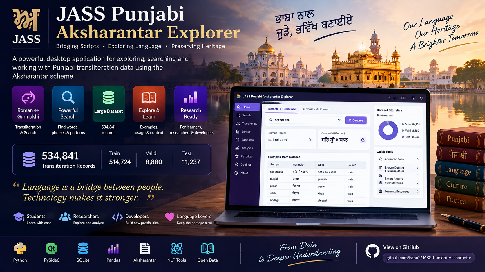

↔
Roman ↔ Gurmukhi
Explore transliteration relationships between Roman input and Gurmukhi output.

JASS Punjabi Aksharantar Explorer is a desktop research workspace for exploring Roman ↔ Gurmukhi transliteration data using the Aksharantar corpus.
Search words and phrases, inspect transliteration pairs, study examples, understand dataset splits and experiment with Punjabi language data through a clean, local-first interface.
Designed for learners, researchers, developers and anyone interested in Punjabi language technology.
Explore transliteration relationships between Roman input and Gurmukhi output.
Find words, phrases and patterns quickly across the language dataset.
Inspect records, splits and examples instead of treating the corpus as a black box.
Test Roman-to-Gurmukhi conversions and examine real corpus examples.
Study language patterns and build intuition from a large structured corpus.
A practical environment for learners and language enthusiasts to explore Punjabi.
The project turns a large Punjabi transliteration dataset into something developers and researchers can directly inspect, search and understand.
“From data to deeper understanding.”
JASS LANGUAGE TECHNOLOGY LABBuilt around a desktop-first workflow so language data remains accessible without requiring a heavy cloud infrastructure.
Projects like this create a bridge between structured language data, practical software and the people who want to learn, research and build with it.
Open source research software from the JASS project family.